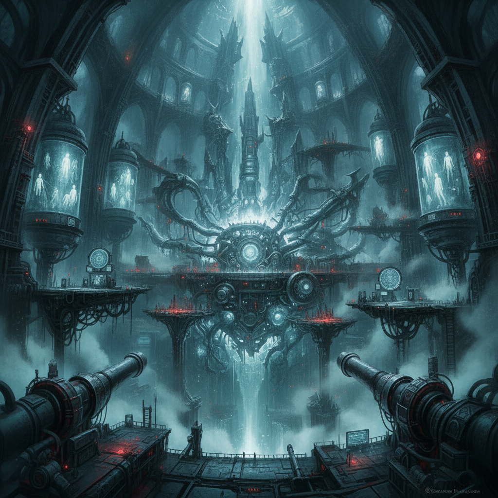
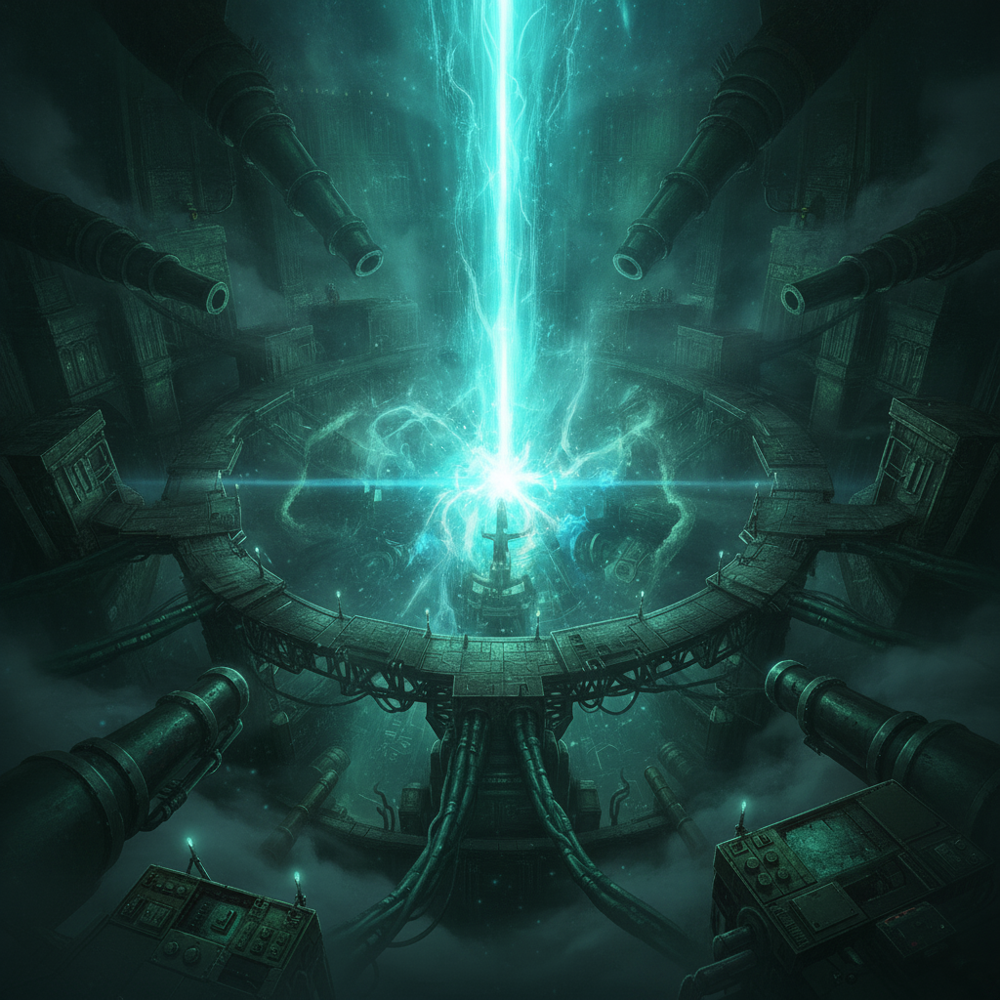
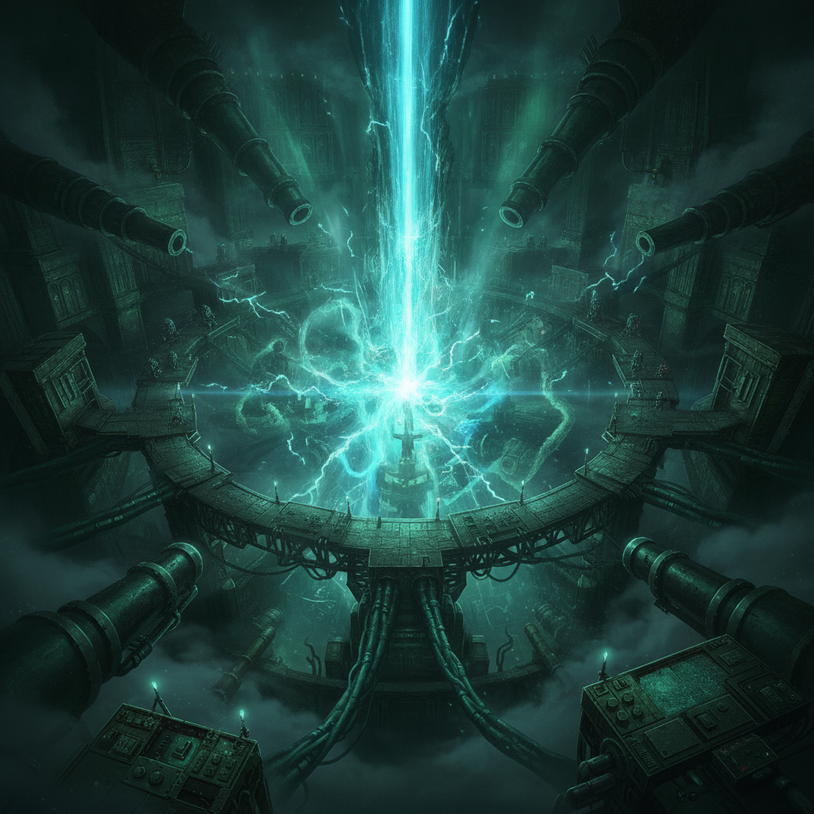
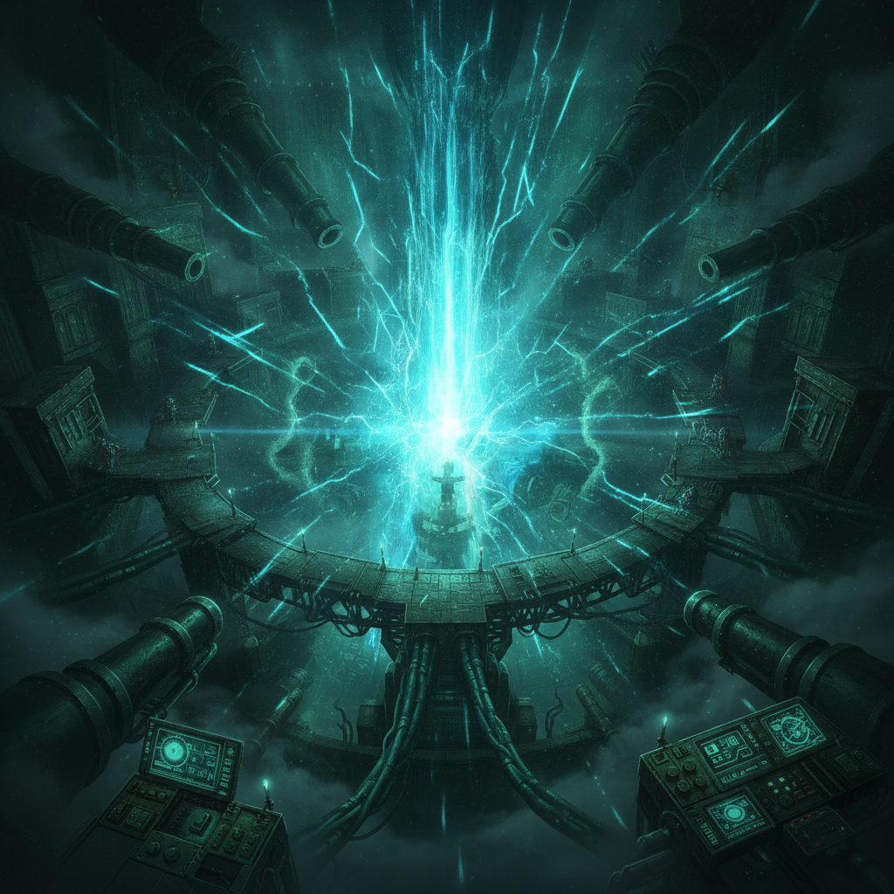

The Inner Sanctum: a cavernous engine-cathedral, blinding aether-core glare, and the monstrous machinery that engineered the world's ruin. This is the final fight.
Seraphine Halcyon“weaving, subtle and lethal”

Seraphine Halcyon“Every lie you built into this engine — I unpick. Hold still.”

Caedon Vale“The courts she turned hold the line. Your defenses are open — now!”

Seraphine Halcyon“It's done. The core is quiet.”